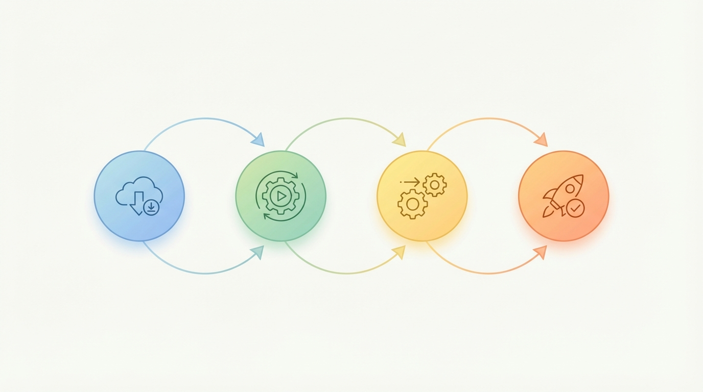

OpsPal turns RevOps expertise into Claude Code and Codex automation that ships.
OpsPal unifies plugin suites, sub-agents, and skills built by RevPal so RevOps leaders can run audits, map workflows, and deliver executive-ready outputs with momentum and clarity. It is a full toolkit, not just a report engine.
Plugin modules
Purpose-built for RevOps leaders who need visibility across systems, repeatable automation, and executive-ready reporting without the chaos.
Salesforce
94 agents, 592 scripts, 59 commands, 40 hooks. RevOps audits, CPQ, territory, automation, metadata, and deployment.
HubSpot
59 agents, 103 scripts, 33 commands, 11 hooks. Portal assessments, workflows, CMS, SEO, data operations, and commerce.
Marketo
30 agents, 35 scripts, 30 commands, 19 hooks. Campaign diagnostics, lead scoring, email deliverability, and sync management.
GTM Planning
12 agents, 2 scripts, 15 commands. Revenue modeling, territory design, quota capacity, and scenario planning.
OKR Strategy
14 agents, 14 commands, 3 hooks. Data-driven OKR lifecycle with live baselines, initiative scoring, and Bayesian learning.
Core Platform
73 agents, 307 scripts, 99 commands, 67 hooks. Self-improvement pipeline, branded PDFs, adaptive routing, and orchestration.
OpsPal workflow
A repeatable cadence for every audit cycle, designed to keep stakeholders aligned.

Let OpsPal do the heavy lifting.
Start with a rapid audit, align your leaders, and deliver outputs and a report that tell the truth.